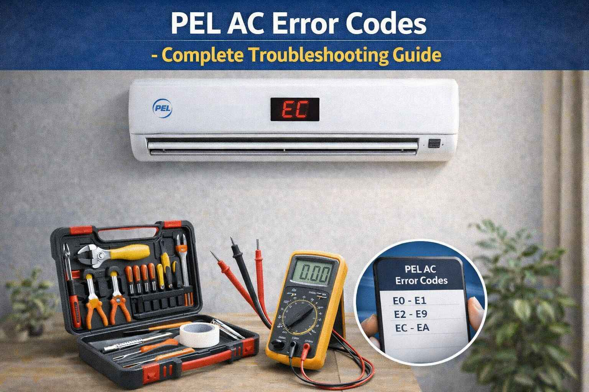

A family from Haripur called me in July 2009. They said "Our PEL AC is showing E1 error. The AC turns on but the compressor is not running. The outdoor unit is making a humming sound." I asked them to check the compressor capacitor. They opened the outdoor unit and found the capacitor was leaking oil. They bought a new capacitor for 350 rupees. They replaced it. The compressor started working. The father said "You saved us from buying a new AC in this heat."
Error: E1 | Fix: Replace leaking compressor capacitor
PEL (Pakistan Engineering Limited) is one of Pakistan's oldest and most trusted appliance manufacturers. PEL air conditioners are known for their robust build quality and reliable performance in Pakistani conditions. This guide covers all common PEL AC error codes with detailed troubleshooting steps.
Quick Tip: PEL ACs display error codes on the indoor unit display. Common codes range from E1 to E9. If your model does not have a display, check the operation light for blinking patterns. Count the blinks to identify the error.
A farmer from Kasur called me in June 2011. He said "My PEL AC is showing E5 error. The AC turns on but no cooling. The outdoor unit is not responding." I asked him to check the wiring between indoor and outdoor units. He found that rats had eaten the communication wire. He repaired the wire connection. The error went away. He said "I never thought rats could cause this problem. Thank you for your help."
Error: E5 | Fix: Repair damaged communication wire
| Error Code | Meaning | Common Fix | Difficulty |
|---|---|---|---|
E1 | Indoor communication / Compressor overload | Check capacitor, clean unit | Medium |
E2 | Room temperature sensor error | Clean or replace sensor | Easy |
E3 | Evaporator sensor error | Replace sensor | Easy |
E4 | Outdoor unit error | Clean outdoor unit | Medium |
E5 | Communication error | Check wiring, reset power | Medium |
E6 | Indoor fan motor error | Check fan, capacitor | Medium |
E7 | Outdoor fan motor error | Check fan, capacitor | Medium |
E8 | EEPROM error | PCB replacement needed | Hard |
E9 | High pressure protection | Clean condenser coil | Medium |
A shopkeeper from Chiniot called me in August 2013. He said "My PEL AC is showing E9 error. The AC runs for 15 minutes and then stops. The outdoor unit feels very hot." I told him to check the outdoor fan. He found that the fan was spinning very slowly. I asked him to check the fan capacitor. He found the capacitor was bulging. He replaced it with a new one. The fan started running at full speed. The error went away. He said "You saved my shop from the heat. Thank you."
Error: E9 | Fix: Replace outdoor fan capacitor
Meaning: Communication problem within the indoor unit or the compressor overload has tripped.
Solutions: Turn off the AC at the circuit breaker for 15 to 20 minutes to let the compressor cool. Check the mains voltage. It should be between 190 and 250 volts. Clean the outdoor condenser coil thoroughly. Ensure the outdoor fan is running properly. Check all wiring connections in the indoor unit. If the voltage is low, install a stabilizer. If the error continues after cleaning and cooling, the compressor may need inspection.
Meaning: The sensor that measures room temperature has failed or is sending incorrect signals.
Solutions: Turn off power. Open the front panel and locate the room temperature sensor near the air intake. Clean the sensor gently with a soft cloth. Measure sensor resistance with a multimeter at room temperature. Normal resistance is 5 to 10 kilo-ohms at 25 degrees. If resistance is infinite or zero, replace the sensor.
Meaning: The sensor monitoring the evaporator coil temperature has failed.
Solutions: Disconnect power. Locate the evaporator sensor clipped to the evaporator coil. Check connections and measure resistance. Replace the sensor if it is faulty.
A government officer from Pakpattan called me in May 2015. He said "My PEL AC is showing E6 error. The indoor fan is not spinning. The AC is making a noise but no air is coming out." I asked him to check if anything was blocking the fan. He opened the front panel and found that a piece of foam had fallen into the fan. He removed it. The fan started working. He said "Such a small thing caused the whole AC to stop working. Thank you for your guidance."
Error: E6 | Fix: Remove obstruction from indoor fan
Meaning: Problem with the outdoor unit. This could be a sensor, communication issue, or PCB problem.
Solutions: Turn off power to both indoor and outdoor units. Clean the outdoor condenser coil thoroughly with a water hose. Remove any debris or obstructions around the outdoor unit. Check the wiring connections between the indoor and outdoor units. If the problem continues, the outdoor sensor or PCB may need inspection.
Meaning: Indoor and outdoor units cannot communicate properly.
Solutions: Turn off both units at the circuit breaker for 15 minutes for a complete reset. Check all wiring connections between the indoor and outdoor units. Inspect the communication cable for damage. Look for rodent damage, which is common in Pakistani homes. Ensure connections are tight and free of corrosion. If the wiring is good, one of the PCBs may need replacement. Install a voltage stabilizer for protection.
Meaning: The indoor fan motor is not running properly.
Solutions: Turn off power and remove the front panel. Check if the fan rotates freely with no obstruction. Clean the fan blades. Check the fan capacitor with a multimeter. Replace it if faulty. If the capacitor is good, the motor may need replacement.
Meaning: The outdoor fan motor is not running properly.
Solutions: Turn off power to the outdoor unit. Remove any debris or obstructions. Check if the fan rotates freely. Test the fan capacitor with a multimeter. Replace it if faulty. If the capacitor is good, the motor may need replacement.
A doctor from Toba Tek Singh called me in September 2017. He said "My PEL AC is showing E2 error. The AC is running but not cooling properly. The display shows the wrong temperature." I told him to check the room temperature sensor. He opened the front panel and found the sensor was covered with thick dust. He cleaned it with a soft cloth. The display started showing the correct temperature. The AC cooled properly. He said "I am a doctor but I did not know about this. Thank you for teaching me."
Error: E2 | Fix: Clean dusty room temperature sensor
Meaning: The main control board memory chip has failed.
Solutions: Try a power reset. Turn off the circuit breaker for 15 minutes. If the error continues, the main PCB needs replacement. Contact a PEL service center.
Meaning: The system pressure has exceeded safe limits.
Solutions: Turn off the AC and let the pressure equalize for 30 minutes. Thoroughly clean the outdoor condenser coil. Ensure the outdoor fan is running properly. Remove any obstructions around the outdoor unit. If the problem continues, call a technician for a refrigerant check.
Pakistan Specific Tips: Install a voltage stabilizer to protect the PCB from power fluctuations. Clean filters every 2 weeks in dusty areas. Check for animal damage to wiring, which is common in many areas. In extreme heat above 45 degrees, it is normal for ACs to run continuously. For professional service, use authorized PEL service centers.
Safety Warning: Always disconnect power before any inspection. For compressor, refrigerant, or PCB issues, always call certified technicians. Electrical components can be dangerous.